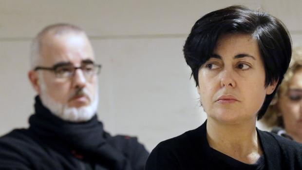

La encontraron funcionarios del presidio de Ávila en el que cumplía 18 años por asesinato
Funcionarios de la cárcel de Brieva (Ávila) han encontrado esta mañana muerta en su celda, colgada de un cinturón de tela atado al marco de la ventana, a Rosario Porto, madre de Asunta Basterra, condenada a 18 años por el asesinato de la niña en Teo, a las afueras de Santiago. Fuentes penitenciarias han indicado a Efe que en el recuento de la mañana los funcionarios han echado en falta a la reclusa y cuando han acudido a su celda, que ocupaba ella sola, la han encontrado ahorcada. Tras el hallazgo, han avisado al 112 y los servicios de emergencia le han practicado maniobras de reanimación pero solo han podido certificar su muerte. Porto tenía toda la celda recogida, incluidas pertenencias, lo que hace pensar que tenía meditada su decisión, según las fuentes. Rosario Porto, abogada, cumplía la pena por el asesinato de su hija adoptiva y ya había cumplido siete años en tres prisiones: A Lama (Pontevedra), Teixeiro (A Coruña) y Brieva (Ávila). Ya había intentado quitarse la vida en otras ocasiones, en una ocasión tomando medicamentos que al parecer iba acumulando de los que le suministraban en la cárcel y el 12 de noviembre del 2018 se enroscó un cordón alrededor del cuello estando en la ducha y llamó a voces a su compañera de celda alertándola de lo que estaba haciendo, por lo que los funcionarios acudieron de inmediato y el episodio terminó ahí. Aunque no quedó acreditado que quisiera acabar con su vida porque en aquellas ocasiones se pensó que eran más intentos de llamar la atención que auténticos intentos de suicidio, a partir de ese momento se intensificó el protocolo de prevención de suicidios y se le asignó a otra interna de confianza. Previamente también había tratado de autolesionarse y el 24 de febrero del 2017 fue ingresada en el hospital tras ingerir un medicamento que tomaba habitualmente por prescripción médica. Precisamente por ello, en los distintos centros penitenciarios por los que ha pasado se le han aplicado protocolos antisuicidio en diversas ocasiones, tres meses en A Lama y tres en Teixeiro. De hecho en la cárcel de Brieva ha estado en la enfermería acompañada siempre por una reclusa mientras se le aplicaba también dicho protocolo, que le había sido levantado. Fuentes penitenciarias precisan, no obstante, que no se pueden estar aplicando estas medidas de forma indefinida porque supone estar en la enfermería la mayor parte del tiempo, además de un castigo añadido a la propia privación de libertad. Para esclarecer lo sucedido, han abierto una investigación que deberá determinar si se cumplieron todos los requisitos de seguridad. Ya se ha avisado a la familia de Rosario Porto y en las próximas horas se le practicará la autopsia que deberá confirmar si la causa de la muerte es, como parece, el ahorcamiento. Porto fue condenada junto a su marido Alfonso Basterra a 18 años de cárcel por el asesinato de su hija adoptiva, cuyo cadáver fue hallado el 22 de septiembre de 2013 en una cuneta en Teo.